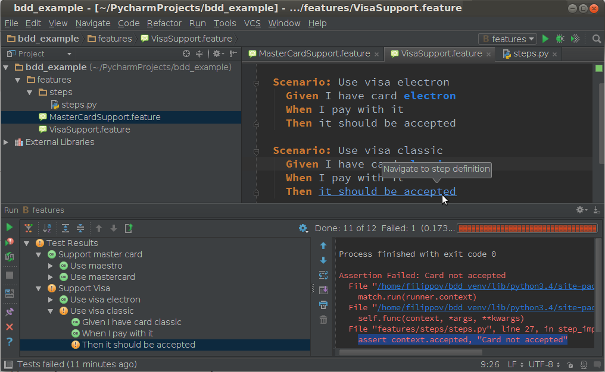
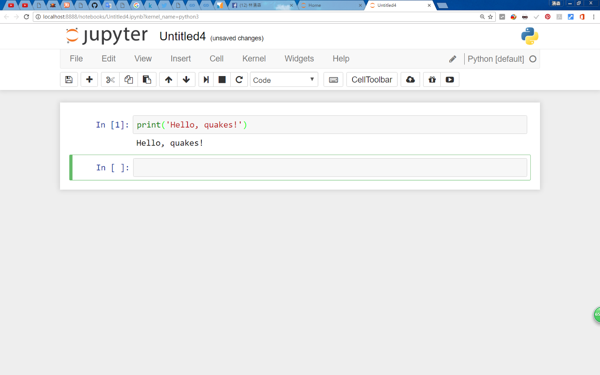
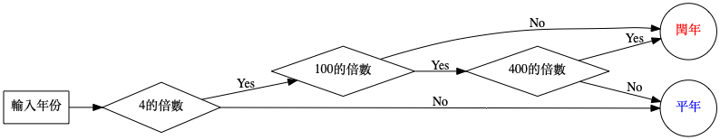

Basic Materials of Python
yen yung chin
Created: 2020-03-11 Wed 14:01
Table of Contents
1 Python簡介
1.1 Python的誕生
1.1.1 科技報導的說法1
- 1989 年，荷蘭的一位叫Guido van Rossum的宅男工程師覺得其他的程式語言都不好用，於是花三個月創造了一種新的程式語言。
- 30年後，每天都有數百萬人使用他創立的這一新語言。系統管理員。
- 研究人員於2019年首次將 5500 萬光年之外黑洞的照片拼湊出來，使用的程式語言也是 Python。
1.1.2 Guido van Rossum自己的說法2
- 在1989年12月，我在尋找一門「課餘」編程項目來打發聖誕節前後的時間。
- 我決定為當時我正構思的一個新的腳本語言寫一個解釋器，它是ABC語言的後代，對UNIX/C程式設計師會有吸引力。
- 作為一個略微有些無關想法的人，和一個《蒙提‧派森的飛行馬戲團》的狂熱愛好者，我選擇了Python作為項目的標題。
1.2 Python的優勢與應用3
1.2.1 Advantages
- Presence of third-party modules
- Extensive support libraries(NumPy for numerical calculations, Pandas for data analytics etc)
- Open source and community development
- Easy to learn
- User-friendly data structures
- High-level language
- Dynamically typed language(No need to mention data type based on value assigned, it takes data type)
- Object-oriented language
- Portable and Interactive
- Portable across Operating systems
1.2.2 Applications
- GUI based desktop applications(Games, Scientific Applications)
- Web frameworks and applications
- Enterprise and Business applications
- Operating Systems
- Language Development
- Prototyping
1.2.3 Organizations using Python
- Google(Components of Google spider and Search Engine)
- Yahoo(Maps)
- YouTube
- Mozilla
- Dropbox
- Microsoft
- Cisco
- Spotify
- Quora
2 Python環境建置
2.1 下載python
- google: python download
- 網址: https://www.python.org/downloads/
- 若為Mac系統，則已預載安裝Python 2.7
- 若為Linux系統，則多數也預載Python 2.x及3.x
查詢目前的python版本，目前官方最新版本為3.8.24
python --version
2.2 python的幾種編寫環境
2.2.1 終端機(shell, command line): interpreter
2.2.1.1 執行環境
- Linux / Mac: terminal
- Windows: 命令提示字元

Figure 2: 命令列下執行Python interpreter
2.2.1.2 執行方式
啟用Python interpreter
1: python- 結束/回到terminal
指令
1: exit()
- 快速鍵: Ctrl-D
- 此模式可配合文字編輯器撰寫程式碼，再於終端機下執行
2.2.2 IDE(Integrated Development Environment)環境
2.2.2.1 Spyder

Figure 3: Spyder IDE for Python
2.2.2.2 Visual Studio Code

Figure 4: Visual Studio Code
2.2.2.3 PyCharm

Figure 5: PyCharm
2.2.3 Web-based環境
2.2.3.1 The Jupyter Notebook

Figure 6: The Jupyter Notebook
2.2.3.2 Google Colaboratory

Figure 7: The Google Colaboratory
2.2.3.3 Python Online Compiler: repl.it

Figure 8: Repl.it
2.3 兩種執行模式5
2.3.1 Interactive mode
2.3.1.1 啟動方式
1: python -i filename.py
2.3.1.2 優點：
- Helpful when your script is extremely short and you want immediate results.
- Faster as you only have to type a command and then press the enter key to get the results.
- Good for beginners who need to understand Python basics.
2.3.1.3 缺點:
- Editing the code in interactive mode is hard as you have to move back to the previous commands or else you have to rewrite the whole command again.
- It's very tedious to run long pieces of code.
2.3.2 Script Mode
2.3.2.1 啟動方式
1: python filename.py
2.3.2.2 優點:
- It is easy to run large pieces of code.
- Editing your script is easier in script mode.
- Good for both beginners and experts.
2.3.2.3 缺點:
- Can be tedious when you need to run only a single or a few lines of cod.
- You must create and save a file before executing your code.
2.4 安裝Jupyter Notebook
2.4.1 安裝pip
2.4.1.1 檢查是否已安裝Python套件管理工具(命令提示字元)
python -m pip --version pip --version
2.4.1.2 下載並安裝pip(命令提示字元)
- 下載pip
點此下載get-pip.py 執行get-pip.py
python get-pip.py
2.4.2 安裝Jupyter(命令提示字元)
安裝
pip install jupyter
啟動
jupyter notebook
- 預設網址: http://localhost:8888
2.4.3 Jupyter Notebook基本操作
變更預設port: XXXX
1: jupyter notebook --port XXXX- 登出後重新登入：token
- 結束Jupyter: 網頁右上角：Quit
3 變數、資料型態、輸出輸入
3.1 變數
3.1.1 命名規則
- 由英文、數字、底線、中文(不建議)組成
- 不得以數字開頭
- 不能與Python內建的保留字相同
3.1.2 範例
| Example | ✓ / × |
|---|---|
| abc_123 | ✓ |
| 3pigs | × |
| Happy New Year | × |
| Class | × |
| Good! | × |
3.1.3 變數的指派(assign)
- Python變數不需宣告，依指派值自動設定資料型態。
語法
1: 變數名稱 = 指派值
- 變數不再使用時，可用del指令將其刪除，以節省記憶體。
範例：
1: a = 5 2: b = 3.14 3: c = 'TNFSH' 4: a = b = c = 10 5: name, number = 'TNFSH', 35
3.2 資料型態
3.2.1 常用類型
- 整數: int
- 浮點數: float
- 布林值(True / False): bool, T 與 F要大寫
- 字串: str, 以'或"含括,若輸出字串要包含引號，則以另一種引號含括該字串。如:
1: age = 18 2: weight = 67.87 3: good_words = " 請常說'請'、'謝謝'、'對不起' "
3.2.2 型態間的轉換
- 自動轉換
1: score = 60 + 3.5 # 自動轉換為浮點數，結果為63.5
- 強制轉換
1: score = int(30.22) # 將括弧內的資料轉換為整數 2: score = float(score) # 將括弧內的資料轉換為浮點數 3: test = str(score) # 將括弧內的資料轉換為字串
3.3 輸出: print
3.3.1 語法
- print( 項目1, [ 項目2, … , sep = 分隔字元 , end = 結束字元 ] )
- sep (分隔字元) 預設為空白字元
- end (結束字元) 預設為換行字元\n
3.3.2 範例
1: a, b = 5, 10 2: print(a, b) 3: print(a, b, sep =',') 4: print(a, end='\t') 5: print(a, end='')
5 10 5,10 5 5
3.3.3 跳脫字元
| 跳脫字元 | 說明 |
|---|---|
| \\ | 印出 \ |
| \' | 印出 ' |
| \n | 換行字元 |
| \t | 水平跳格字元(Tab) |
| \b | 倒退一格字元(Backspace) |
3.3.4 格式化輸出
- 語法
- 格式化輸出語法：print( 字串 %(參數) )
- 字串裡 %s 代表字串、%d 代表整數、%f 代表浮點數
- 格式化輸出語法：print( 字串 %(參數) )
範例
1: name = '台北101' 2: height = 508 3: fee = 18.24 4: print('%s的高度為%d公尺，參觀門票為%3.2f美金.' %(name, height, fee)) 5:
台北101的高度為508公尺，參觀門票為18.24美金.
3.3.5 format格式化輸出
- 語法
- format格式化輸出語法：print(字串.format (參數) )
- 字串裡以{0}、{1}、… 來對應參數列裡的變數
- format格式化輸出語法：print(字串.format (參數) )
範例
1: name = 'Taipei101' 2: height = 508.35 3: print('{0}的高度為{1}公尺'.format (name, height)) 4: print('{0:15s}的高度為{1:10.1f}公尺'.format (name, height))
Taipei101的高度為508.35公尺 Taipei101 的高度為 508.4公尺
3.4 輸入
3.4.1 語法/範例
語法
1: variable = intpu([提示字元])
- PS: 經由input( )函式讀入的資料，其資料型態皆為字串
範例
1: a = input('輸入國文成績:') 2: b = input('輸入數學成績:') 3: c = input() 4: print('三科成績分別為%5s %5s %5s' %(a, b, c))
3.4.2 輸入搭配型別轉換
1: a = int(input('輸入國文成績:')) 2: b = int(input('輸入數學成績:')) 3: c = int(input()) 4: print('總分為%5d' %(a+b+c))
3.4.3 input注意事項
- input 每筆輸入讀至換行符號為止
- 若測試資料輸入以空白間隔，則讀入整行字串後，
再以字串分割處理
1: inp = input() 2: inpstr = inp.split() 3: # 依此類推逐一取得輸入值 4: a = int(inpstr[0]) 5: b = int(inpstr[1]) 6: c = int(inpstr[2])
3.5 註解
- 語法
- 單行註解：以 # 開頭
- 多行註解：前後以 ''' 或 """ 含括
- 單行註解：以 # 開頭
範例
1: ## 這是單行註解 2: int a = 3 3: ''' 4: 這是多行註解 5: LALALA 6: ''' 7: print(a) 8: """ 9: 這也是 10: """
3.6 實作練習
4 運算元與運算式
4.1 算術運算
- +: 加
- -: 減
- *: 乘
- /: 除
- %: 取餘數
- //: 求商
- **: 指數
4.1.1 算術運算範例#1
1: # python code for arithematic opearation 2: print(5+3) 3: print(5-3) 4: print(5*3) 5: print(5/3) 6: print(5%3) 7: print(5//3) 8: print(5**3)
8 2 15 1.6666666666666667 2 1 125
4.1.2 算術運算範例#2
1: a = int(input("input a: ")) 2: op = input("input op: ") 3: b = int(input("input b: ")) 4: 5: if op == '+': 6: ans = a + b; 7: elif op == '-': 8: ans = a - b; 9: elif op == '*': 10: ans = a * b; 11: elif op == '/': 12: ans = a / b; 13: elif op == '%': 14: ans = a % b; 15: 16: print(str(a) + op + str(b) + "=" + str(ans))
4.2 關係運算子
| > | < | >= | <= | == | != |
|---|---|---|---|---|---|
| 大於 | 小於 | 大於等於 | 小於等於 | 等於 | 不等於 |
4.3 邏輯運算子
| and | or | not |
|---|---|---|
| (a>b)and(a<c) | (a>b)or<(a==b) | not(a>b) |
4.4 複合指定運算子
| += | -= | *= | /= | %= | //= | **= |
5 判斷結構
5.1 if
5.1.1 語法
- 條件式可不用括號( )含括，條件式後需搭配冒號：
- 程式區塊以縮排方式處理，同一層縮排視為同一程式區塊
1: if condition: 2: statement 1 3: ...
5.1.2 範例
1: num = 31 2: if num % 2 == 0: 3: print('%d is even' %(num)) 4: if num % 2 == 1: 5: print('%d is odd' %(num))
31 is odd
5.2 if … else …
5.2.1 語法
1: if condition: 2: statement 1 3: ... 4: else: 5: statement 3 6: ...
5.2.2 範例
1: num = 32 2: if num % 2 == 0: 3: print('%d is even' %(num)) 4: else: 5: print('%d is odd' %(num))
5.3 if … elif … else …
5.3.1 語法
1: if condition 1: 2: statement 1 3: ... 4: elif condition 2: 5: statement 3 6: ... 7: elif condition 3: 8: statement 5 9: ... 10: else: 11: statement N
5.3.2 範例
1: score = 87 2: if score >= 90: 3: print('A') 4: elif score >= 80: 5: print('B') 6: elif score >= 70: 7: print('C') 8: elif score >= 60: 9: print('D') 10: else: 11: print('F')
5.4 巢狀if
5.4.1 語法
1: if condition 1: 2: statement 1 3: ... 4: if condition 2: 5: statement 3 6: ... 7: else: 8: statement 5 9: ... 10: else: 11: if condition 3: 12: statement 7 13: ... 14: else: 15: statement N 16: ...
5.4.2 範例: 某年份是否為閏年

Figure 9: 閏年判斷流程
5.4.3 code #1
year = int(input("請輸入一個年份:")) if (year % 4) == 0: if (year % 100) == 0: if (year % 400) == 0: print("%s年是世紀閏年" % year) else: print("%s年為平年" % year) else: print("%s年是普通閏年" % year) else: print("%s年為平年" % year)
5.4.4 code #2
year = int(input("請輸入一個年份:")) if (year % 4) == 0 and (year % 100) !=0 or (year % 400) == 0: print("%s年是閏年" % year) else: print("%s年為平年" % year)
5.4.5 練習題
6 迴圈結構
6.1 for
6.1.1 語法
1: for variable in sequence: 2: statement 1 3: ...
- for迴圈的變數會依序走訪sequence中的元素
- sequence6可為range函式、字串(string)、表列(list)、元組(tuple)、字典(dict)、集合(set)
6.1.2 List為range() function語法
for variable in range([起始值,] 終止值 [,遞增值]): statement 1 ...
- 起始值預設為0，遞增值預設為1
- 起始值 ≤ range( )的範圍 < 終止值
6.1.3 List為range() function語法
1: for x in range(6): 2: print(x, end=' ') 3: print('\n====') 4: for x in range(3, 10, 2): 5: print(x, ' ') 6: print('\n====') 7: for x in range(3, 10): 8: print(x, end=', ')
0 1 2 3 4 5 ==== 3 5 7 9 ==== 3 4 5 6 7 8 9
6.1.4 List為String
1: school = 'TNFSH' 2: for x in school: 3: print(x, end=' ') 4: print('\n=========') 5: for x in school: 6: print(chr(ord(x)+1), end=' ')
T N F S H ========= U O G T I
- ord( ) -> 將字元轉為ASCII編碼(整數)
- chr( ) -> 將ASCII編碼(整數)轉為字元
6.2 while
6.2.1 語法
while (condition): statement 1 ...
6.2.2 範例
1: n = 12345 2: while (n > 0): 3: print(n%10) 4: n //= 10
5 4 3 2 1
1: m, n = 42, 75 2: while (n > 0): 3: m, n = n, m % n 4: print(m)
3
6.3 while + else
6.3.1 語法
while (condition): statement 1 ... else: statement 3 ...
6.3.2 範例
1: n = 56 2: while (n%2 == 0): 3: print(n, end=' ') 4: n //= 2 5: else: 6: print('end with %d' %n)
56 28 14 end with 7
6.4 break
跳出整個loop
6.4.1 範例
1: for letter in 'Python': 2: if letter == 'h': 3: print('Now stop...') 4: break 5: print('Processing Letrer:', letter)
Processing Letrer: P Processing Letrer: y Processing Letrer: t Now stop...
6.5 continue
跳出單次loop
6.5.1 範例
1: for letter in 'Python': 2: if letter == 'h': 3: print('Now skip...') 4: continue 5: print('Processing Letrer:', letter)
Processing Letrer: P Processing Letrer: y Processing Letrer: t Now skip... Processing Letrer: o Processing Letrer: n
6.6 巢狀迴圈
6.6.1 範例
1: for i in range(1, 10): 2: for j in range(1, 10): 3: print('%d*%d=%2d' %(i, j, i*j), end=' ') 4: print()
1*1= 1 1*2= 2 1*3= 3 1*4= 4 1*5= 5 1*6= 6 1*7= 7 1*8= 8 1*9= 9 2*1= 2 2*2= 4 2*3= 6 2*4= 8 2*5=10 2*6=12 2*7=14 2*8=16 2*9=18 3*1= 3 3*2= 6 3*3= 9 3*4=12 3*5=15 3*6=18 3*7=21 3*8=24 3*9=27 4*1= 4 4*2= 8 4*3=12 4*4=16 4*5=20 4*6=24 4*7=28 4*8=32 4*9=36 5*1= 5 5*2=10 5*3=15 5*4=20 5*5=25 5*6=30 5*7=35 5*8=40 5*9=45 6*1= 6 6*2=12 6*3=18 6*4=24 6*5=30 6*6=36 6*7=42 6*8=48 6*9=54 7*1= 7 7*2=14 7*3=21 7*4=28 7*5=35 7*6=42 7*7=49 7*8=56 7*9=63 8*1= 8 8*2=16 8*3=24 8*4=32 8*5=40 8*6=48 8*7=56 8*8=64 8*9=72 9*1= 9 9*2=18 9*3=27 9*4=36 9*5=45 9*6=54 9*7=63 9*8=72 9*9=81
7 資料型別
7.1 字串string
7.1.1 資料格式
以單引號(')或雙引號(")將資料含括起來
stringA = 'Hello Python' stringB = "Hello Python"
7.1.2 範例1
| index | 0 | 1 | 2 | 3 | 4 | 5 | 6 | 7 | 8 | 9 | 10 | 11 |
|---|---|---|---|---|---|---|---|---|---|---|---|---|
| 字串 | H | e | l | l | o | P | y | t | h | o | n | |
| index | -12 | -11 | -10 | -9 | -8 | -7 | -6 | -5 | -4 | -3 | -2 | -1 |
7.1.3 字串運算子
- +: 連接字串
- *: 重複字串
- [index]: 字串中index所在字元
- [start:end:increment]: 截取部份字串
- in: 判斷是否為子字串
7.1.4 範例2
1: tel = '06-2371206' 2: ext = '#600' 3: # + 4: print('tel+ext:',tel+ext) 5: # * 6: print('ext*2:', ext*2) 7: # [index] 8: print('tel[5]:', tel[5]) 9: # [start:end:increment] 10: print('tel[1:4]:',tel[1:4]) 11: print('tel[6: ]:',tel[6: ]) 12: print('tel[ :6]:',tel[ :6]) 13: print('tel[::-1]:',tel[::-1]) 14: # in 15: print("'9' in tel:", '9' in tel)
tel+ext: 06-2371206#600 ext*2: #600#600 tel[5]: 7 tel[1:4]: 6-2 tel[6: ]: 1206 tel[ :6]: 06-237 tel[::-1]: 6021732-60 '9' in tel: False
7.1.5 字串function與method
- len(<str>): 計算字串長度
- <str>.lower(): 字串轉小寫
- <str>.upper(): 字串轉大寫
- <str>.islower(): 字串中英文全大寫
- <str>.isupper(): 字串中英文全小寫
- <str>.find(<str1>): 在<str>尋找<str1>，回傳索引值；
若未找到，回傳-1
- <str>.replace(<str1>, <str2>): 將<str>中的<str1>以<str2>取代
- <str>.split([sep]): 字串以sep分割, sep預設值為空白
7.1.6 範例3
1: school = 'Tnfsh' 2: print('school:', school) 3: print('len(school):', len(school)) 4: print('school.lower():', school.lower()) 5: print('school.isupper():', school.isupper()) 6: print("school.find('fsh'):", school.find('fsh')) 7: print("school.replace('fsh', ssh'):", school.replace('fsh', 'ssh')) 8: school = school.replace('fsh', 'ssh') 9: print("school.split('f'):", school.split('n'))
school: Tnfsh
len(school): 5
school.lower(): tnfsh
school.isupper(): False
school.find('fsh'): 2
school.replace('fsh', ssh'): Tnssh
school.split('f'): ['T', 'ssh']
7.2 列表list
7.2.1 資料格式
- 以[ ]將不同型態的資料含括起來，以 , 分隔
- 表列中的資料是有序排列，從0開始編號
- 格式：表列名稱 = [元素1, 元素2, … ]
1: data = ['John', [95, 118], 'May', 100] 2: print(data[1])
[95, 118]
7.2.2 表列函式與方法
- len(<list>): 計算表列元素個數
- list(<str>): 將<str>轉成表列
- <list>.clear(): 清除表列中所有元素
- <list>.append(<obj>): 將<obj>加到<list>尾端
- <list>.extend(<list1>): 將<list1>合併至<list>尾端
- <list>.remove(<obj>): 移除<list>中<obj>元素
- <list>.insert(<i>,<obj>): 將<obj>加到<list>的索引值<i>位置
- <list>.pop([index]): 從<list>取出指定元素
若[index]未指定，則取出尾端元素
- <list>.reverse(): 反轉表列元素
- sum(<list>): 將表列中所有元素加總(註：僅限表列元素皆為數字)
- <list>.sort(): 將表列中所有元素排序
- '[sep]'.join( <list>): 用[sep]來連結表列元素，若未指定[sep]，則無間隔(僅限表列元素皆為字串)
7.2.3 list範例
1: data = ['John', [95, 118], 'May', 100] 2: print(len(data)) 3: print(len(data[1])) 4: print(list('TNFSH')) 5: data.clear() #清空list 6: data.append(35) 7: print(data) 8: data1 = [89, 'James', 100] 9: data.extend(data1) 10: print(data) 11: data.remove('James') 12: print(data) 13: data.insert(1, 200) 14: print(data) 15: data.pop() 16: data.reverse() 17: print(data) 18: print(sum(data)) 19: data.sort() 20: print(data) 21: # string 22: data_s = ["a", "b", "c"] 23: sep = "-" 24: print(sep.join(data_s))
4 2 ['T', 'N', 'F', 'S', 'H'] [] [35] [35, 89, 'James', 100] [35, 89, 100] [35, 200, 89, 100] [89, 200, 35] 324 [35, 89, 200] a-b-c
7.2.4 list練習
- 連續輸入成績(輸入-1結束)，將成績由高至低排序輸出，並輸出總分、平均
1: score = [] 2: while(True): 3: sc = int(input()) 4: if (sc != -1): 5: score.append(sc) 6: else: 7: break 8: score.sort(reverse=True) 9: print(score)
1: sum = 0 2: grades = [] 3: for i in range(0, 5): 4: x = int(input("請輸入第" + str(i + 1) + "個成績: ")) 5: grades.append(x) 6: sum += x 7: print(sum/5) 8: print(grades)
7.3 元組tuple
7.3.1 資料格式
- 資料格式：以( )將不同型態的資料含括起來，以 , 分隔
- 元組中的資料是有序排列，從0開始編號
- 格式：元組名稱 = (元素1, 元素2, … )
- 與表列list類似，但元組tuple內的元素不能修改
7.3.2 範例
1: data = ( 'John', [95, 118], 'May', 100 ) 2: print(data[1]) 3: tup1 = (53, ) #只有一個元素時，其後要加逗號 4: print(tup1)
[95, 118] (53,)
7.3.3 練習: 史上最強掌法
自從鐵掌無敵馬掌門出任武林盟主後，綠林豪傑一片哀鴻，民不聊生，痛苦指數破表，眾家名門弟子甚至遠避異鄉以求溫飽。近來馬掌門更獨創「油電雙掌」，以圖鞏固武林領導地位，此套掌法高深莫測，武林中人聞風喪膽，少林、武當各派高手不得不拋開門戶之見，齊聚「竹園崗」合作商議對策。目前僅由歴來幾次掌下逃生者的對戰經驗分析出以下數據
| 與馬掌門對戰時間(秒) | 對戰者每秒接受之傷害值 |
|---|---|
| 120以下 | 2.10 |
| 121~330 | 3.02 |
| 331~500 | 4.39 |
| 501~700 | 4.97 |
| 701以上 | 5.63 |
請你幫這些可憐的高手寫一個程式分析對戰時間與受傷指數間的關係。
輸入：0 ~ 10000秒之間任意值
輸出：受傷指數
7.3.4 解1
1: #sec = input() 2: sec = 800 3: if sec <= 120: 4: print(sec*2.10) 5: elif sec > 120 and sec <= 330: 6: print(120*2.10+(sec-120)*3.02) 7: elif sec > 330 and sec <= 500: 8: print(120*2.10+(330-120)*3.02+(sec-300)*4.39) 9: elif sec > 500 and sec <= 700: 10: print(120*2.10+(330-120)*3.02+(500-330)*4.39+(sec-500)*4.97) 11: elif sec > 700: 12: print(120*2.10+(330-120)*3.02+(500-330)*4.39+(700-500)*4.97+(sec-700)*5.63)
3189.5
7.3.5 解2
1: #sec = input() 2: sec = 800 3: hurt = 0 4: gap = (700, 500, 330, 120, 0) 5: rate = (5.63, 4.97, 4.39, 3.02, 2.10) 6: for i in range(5): 7: if sec > gap[i]: 8: hurt += (sec-gap[i])*rate[i] 9: sec = gap[i] 10: print(hurt)
3189.5
7.4 字典dict
7.4.1 資料格式
- 以{ }將各組鍵:值對應資料含括起來，以 , 分隔
- 字典中的資料是無序的
- 格式：字典名稱 = {k1:v1, k2:v2, … }
- 範例：
- 註：若字典中有相同的key，則會取出最後的value
7.4.2 範例
1: data = { 'John': 95, 'May': 100 } 2: print(data['May'])
100
7.4.3 dic操作
- 新增、修改、刪除
1: data = { 'John': 95, 'May': 100 } 2: # 新增 3: data['Harrison'] = 88 4: # 修改 5: data['John'] = 99 6: # 刪除鍵值對 7: del data['John'] 8: print(data) 9: # 刪除dic 10: del data 11: # print(data) --> NameError: name 'data' is not defined
{'May': 100, 'Harrison': 88}
7.4.4 dic method
7.4.4.1 增/剛
- <dict>.clear()
- <dict>.popitem()
- <dict>.copy()
1: data = { 'John': 95, 'May': 100, 'John': 105 } 2: data1 = data.copy() 3: print("data1 = data.copy():",data1.copy()) 4: print("data:",data) 5: print("data.clear():",data.clear()) 6: pop1 = data1.popitem() 7: print(pop1)
data1 = data.copy(): {'John': 105, 'May': 100}
data: {'John': 105, 'May': 100}
data.clear(): None
('May', 100)
7.4.4.2 取值
- <dict>.get(key, default=None)
- <dict>.items()
- <dict>.keys()
- <dict>.values()
1: data = { 'John': 95, 'May': 100, 'John': 105 } 2: print("data.get('John'):",data.get('John')) 3: print("data.items():",data.items()) 4: print("data.keys():",data.keys()) 5: print("data.values()",data.values())
data.get('John'): 105
data.items(): dict_items([('John', 105), ('May', 100)])
data.keys(): dict_keys(['John', 'May'])
data.values() dict_values([105, 100])
7.4.4.3 fromkes
- <dict>.fromkes(<seq>[, val]): Python 字典 fromkeys() 函數用於創建一個新字典，以序列 seq 中元素做字典的鍵，value為字典所有鍵對應的初始值。
1: data = { 'John': 95, 'May': 100, 'John': 105 } 2: name = ('Vanissa', 'May', 'John') 3: data2 = data.fromkeys(name) 4: print(data2) 5: data2 = data.fromkeys(name, 100) 6: print(data2)
{'Vanissa': None, 'May': None, 'John': None}
{'Vanissa': 100, 'May': 100, 'John': 100}
7.5 List v.s. Tuple
二者的差異與適用時機7：
7.5.1 能否改變內容
- Using a tuple instead of a list can give the programmer and the interpreter a hint that the data should not be changed.
7.5.2 可讀性
Reading data is simpler when tuples are stored inside a list. For example,
1: [(2,4), (5,7), (3,8), (5,9)]
is easier to read than
1: [[2,4], [5,7], [3,8], [5,9]]
7.5.3 與dictionary的相似性
Tuples are commonly used as the equivalent of a dictionary without keys to store data. For Example,
1: [('Swordfish', 'Dominic Sena', 2001), ('Snowden', ' Oliver Stone', 2016), ('Taxi Driver', 'Martin Scorsese', 1976)]
- Above example contains tuples inside list which has a list of movies.
Tuple can also be used as key in dictionary due to their hashable and immutable nature whereas Lists are not used as key in a dictionary because list can't handle _hash_() and have mutable nature.
1: key_val= {('alpha','bravo'):123} #Valid 2: key_val = {['alpha','bravo']:123} #Invalid
7.6 集合set
7.6.1 資料格式
- 資料格式：以{}將各組資料含括起來，以','分隔,或以set()建立
- 集合中的資料是無序的，會自動刪除重複元素
格式
1: 集合名稱 = {元素1, 元素2, … }
- 註：set(<seq>)函式的參數<seq>可為字串、表列、元組、字典
7.6.2 範例
1: S1 = { 'John', 95, 'May', 100, 'John' } 2: S2 = set('apple') ⇒ {'l', 'a', 'e', 'p'} # 集合的資料是無序的
7.6.3 元素新增刪除
1: <set>.add(<item>) 2: <set>.remove(<item>)
- remove()若無此item會發生錯誤
1: s = set('apple') 2: s.add('x') 3: print(s) 4: s.remove('p') 5: print(s)
{'e', 'p', 'x', 'l', 'a'}
{'e', 'x', 'l', 'a'}
7.6.4 集合運算
| 運算 | 符號 |
|---|---|
| 聯集 | | |
| 交集 | & |
| 差集 | - |
| 互斥 | ^ |
| 屬於 | in |
1: c = {'1234', 'TNFSH', 'qq', '434'} 2: print(c) 3: a = set('1234') 4: b = set('357') 5: print("a | b:", a | b) 6: print("a & b:", a & b) 7: print("a - b:", a - b) 8: print("b | a:", b | a) 9: print("a ^ b:", a ^ b) 10: print("'5' in a:", '5' in a) 11: print("'5' in b:", '5' in b)
{'1234', 'TNFSH', '434', 'qq'}
a | b: {'4', '2', '1', '5', '7', '3'}
a & b: {'3'}
a - b: {'4', '2', '1'}
b | a: {'4', '5', '2', '1', '7', '3'}
a ^ b: {'4', '2', '7', '5', '1'}
'5' in a: False
'5' in b: True
7.6.5 詳細語法
7.6.6 練習：skyoj ⇒ Contest ⇒ Python練習題(資料型別)
7.7 資料型別整理
| 資料型別 | 符號 | 資料可改? | 資料有序? | 資料類型 |
|---|---|---|---|---|
| 字串string | ' ' 或 " " | ✖️ | ✔️ | 相同(字元) |
| 表列list | [ ] | ✔️ | ✔️ | 可不同 |
| 元組tuple | ( ) | ✖ | ️✔ | ️可不同 |
| 字典dict | { } | ✔️ | ✖️ | 相同(鍵:值) |
| 集合set | { } | ✔️ | ✖️ | 可不同 |
8 FUNCTION
8.1 函式(function)基本操作
8.1.1 函式(function)的重要性
- function為一段程式的集合，可視為一個獨立的區段。
- function可重覆使用，因此為結構化程式語言的重要元素。
可將龐大複雜的程式分解為小問題，由多人分別以function解決，縮短開發時間。
- function可區分為以下三類：
- Python內建function，如: print()、len()、int()、str()…。
- 第三方公司所開發的模組module(多個function組合)。
- 自定義function。
- Python內建function，如: print()、len()、int()、str()…。
8.1.2 自定義函式
宣告語法
1: def 函式名稱 ( [參數1, 參數2, ...] ): 2: 程式區塊 3: [ return 值 ]
- 說明 :
- 參數可省略，亦即呼叫function不需傳入任何資料(引數)。
- 若無回傳值，則無需return。
- 若多個回傳值可用逗號隔開。
- 參數可省略，亦即呼叫function不需傳入任何資料(引數)。
8.1.3 自定義函式的呼叫
呼叫函式語法：
1: [ 變數 ] = 函式名稱( [引數1, 引數2, ... ] )
1: def circle(r): 2: return r*r*3.14; 3: 4: r = 10 5: print('半徑%d的圓面積：%d' %(r, circle(r)))
半徑10的圓面積：314
8.1.4 多參數函式
- 呼叫函式時引數(arugment)個數
- 自定義函式的參數(parameter)個數
設定參數初始值。 若呼叫時無引數傳入， 則使用其初始值。
1: def printInfo(name, school='TNFSH'): 2: print('學生:',name,'就讀:',school) 3: return 4: 5: printInfo(name='James') 6: printInfo(name='Harrison',school='TNSSH')
學生: James 就讀: TNFSH 學生: Harrison 就讀: TNSSH
8.1.5 多回傳值函式
呼叫函式多個回傳值語法
1: [ 變數1, 變數2, ... ] = 函式名稱( [引數1, 引數2, ... ] )
1: def scoreProcessor(score): 2: sum = 0 3: for x in score: 4: sum += x 5: return sum, sum/len(score) 6: 7: scores = (21, 33, 83, 100, 75, 60) 8: sum, avg = scoreProcessor(scores) 9: print('sum=',sum,',average=',avg)
sum= 372 ,average= 62.0
8.2 引數(argument)的傳遞
- 每一個函式都是獨立的，所以函式只知道自己程式區域內的變數，不認識函式外的變數。
- 變數因其所宣告位置，可區分為全域變數(Global variable)、區域變數(Local variable)。
- 全域變數：宣告在任何函式外，所有函式皆可存取。
- 區域變數：宣告在函式內，僅函式內可存取。c
- 全域變數：宣告在任何函式外，所有函式皆可存取。
全域變數與區域變數範例
1: def printGlobal(x, y): 2: print(a+b) 3: 4: def printLocal(a, b): 5: print(a+b) 6: 7: a, b = 5, 10 8: printGlobal(10, 10) 9: printLocal(10,10)
15 20
8.2.1 傳值與傳址
- 引數(argument)的傳遞分為兩種方式，由Python自動判別：
- 傳值呼叫(Call-by-Value)
- 傳址呼叫(Call-by-Reference)
- 傳值呼叫(Call-by-Value)
| 引數傳遞 | 傳遞內容 | 參數改變 | 資料型別 |
|---|---|---|---|
| 傳值呼叫 call-by-value | 引數值 | 否 | bool, int, float, str, tuple, chr |
| 傳址呼叫call-by-reference | 引數記憶體位址 | 是 | list, dict, set |
1: # str傳值、list傳址 2: def ccc(name, score): 3: name = 'Amy' 4: score.append(99) 5: print('--函式內輸出---') 6: print('name:', name,'\tscore:',score) 7: 8: name = 'Josh' 9: score = [77, 88] 10: 11: ccc(name, score) 12: print('--主程式輸出--') 13: print('name:', name,'\tscore:',score)
--函式內輸出--- name: Amy score: [77, 88, 99] --主程式輸出-- name: Josh score: [77, 88, 99]
8.3 模組(module)
8.3.1 匯入模組語法：
1: import 模組1 [, 模組2, ... ] 2: from 模組 import 函式
8.3.2 範例
1: import random as ran 2: 3: print(ran.randint(1, 100)) 4: print(ran.randint(1, 100)) 5: print(ran.randint(1, 100))
50 78 16
8.4 遞迴(recursive)
8.4.1 語法
- 遞迴(recursive)：一個函式直接呼叫函式本身
1: def fib(n): 2: if n == 1 or n == 2: 3: return 1 4: else: 5: return fib(n-1) + fib(n-2) 6: 7: print('The %d-th Fibonacci number = %d' %(10, fib(10)))
The 10-th Fibonacci number = 55
8.4.2 基本條件
- 遞迴程式設計要滿足兩條件:
遞迴關係式，如
1: fib(n) = fib(n-1) + fib(n-2) 2: sum(n) = n + sum(n-1)
遞迴終止式，如
1: f(1) = f(2) = 1 2: sum(0) = 0
範例:GCD-while
1: m, n = 20, 50 2: while (n>0): 3: m, n = n, m % n 4: print(m)
10
8.4.3 範例
範例:GCD-recursive
1: def gcd(a, b): 2: if b == 0: 3: return a 4: return gcd(b, a % b) 5: 6: a, b = 10, 50 7: print(gcd(a, b))
10
8.4.4 練習
- 計算 n! 值。
輸入 n，輸出 n! = XXXXX。如輸入5，輸出5! = 120。
- 計算C(n, r)組合數。
輸入 n, r，輸出C(n, r) = XX。如輸入9, 4，輸出C(9, 4) = 126。
計算擴展歐幾里德。 輸入 a, b，輸出a*x + b*y = gcd。如輸入3, 5，輸出3*2 + 5*-1 = 1
1: def ext_euclid(a, b): 2: old_s,s=1,0 3: old_t,t=0,1 4: old_r,r=a,b 5: if b == 0: 6: return 1, 0, a 7: else: 8: while(r!=0): 9: q=old_r//r 10: old_r,r=r,old_r-q*r 11: old_s,s=s,old_s-q*s 12: old_t,t=t,old_t-q*t 13: return old_s, old_t, old_r 14: 15: a, b, c = ext_euclid(240, 33) 16: print('%dx + %dy = %d' %(a, b, c))
4x + -29y = 3